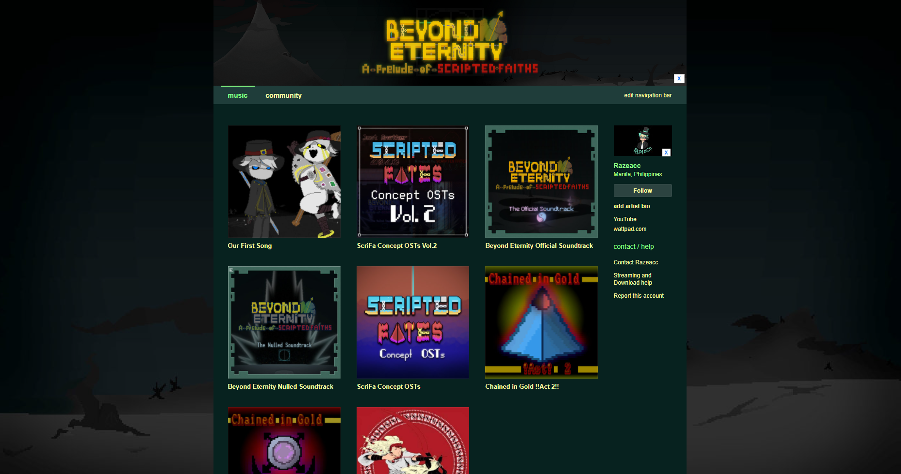
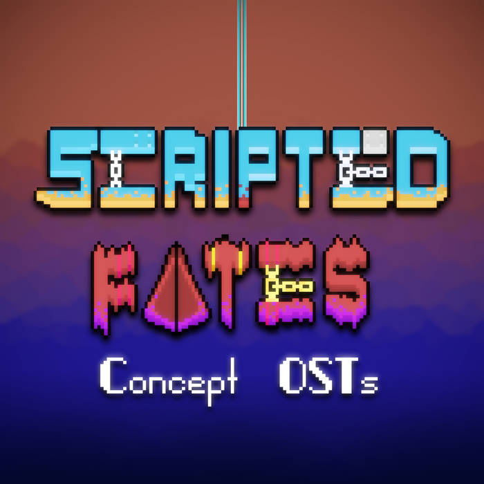

Razeacc Bandcamp

Over the past 4 years of managing this Bandcamp account, I've uploaded 6 Albums and 2 Singles,
most of which being instrumentals designed as soundtracks for either games, animations, or both.

ScriFa Concept OSTs
Razeacc - Azure Divide
Simple tracks I made for one of my concept games: Scripted Fates.
The project was originally meant to come out after my Chained in Gold novel, but since then, plans
have changed and will now come out much once I have honed my game dev skills further.
Not only that, but Scripted Fates has shifted from being a standalone game, to a series of games instead.
Beyond Eternity Nulled Soundtrack
Razeacc - Death Tangent
Unused tracks that were originally created for my visual novel game, Beyond Eternity: A Prelude of Scripted Faiths.
The tracks aren't wasted, however, for they'll be given new life once more when the time comes. Either in a remake of Beyond Eternity
or in other games I create in the future.
Beyond Eternity Official Soundtrack
Razeacc - Heart in a Sleeve
Razeacc - No matter what
The full soundtrack of my visual novel game, Beyond Eternity: A Prelude of Scripted Faiths.
Consisting of over 20+ tracks, it hosts a wide variety of mood from the silliest of tunes to the most eerie and threatening drones.
ScriFa Concept OSTs Vol.2
Razeacc - BIRTH of the Creator
Razeacc - The Cradle and The Archgod
Razeacc - Sabishiki Ten'nō
Razeacc - Continent Splitter
The second album of concept soundtracks I made for Scripted Fates.
However, unlike the first album, this one was created with the idea of Scripted Fates being a franchise of games rather than a standalone game.
Thanks to this new vision, the second volume features a considerably larger variety of tracks meant for the newer refined concept for Scripted Fates.
Our First Song
This was the first song I've ever composed utilizing singable lyrics.
The song follows the story of a village kid and his best friend who's a priestess.
They make a promise to achieve their future dream to live beyond the sky.
Years later, a war happens that kills the village kid and the priestes forgets the promise.
Eventually, the priestess remembers a song she wrote with the kid, inspiring her to
continue trying to live beyond the skies once more.
Singer - Brianna Manas